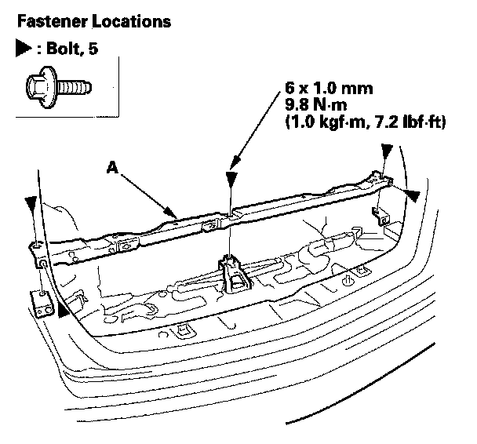

Cargo Lid Support
Cargo Lid Support ReplacementNOTE:
- Put on gloves to protect your hands.
- Take care not to scratch the body and related parts.
1. Remove these items:
- Rear side trim panel, both sides
- Rear side trim panel support bracket
- Cargo rear trim panel
- XM receiver
- Active damper control unit
2. Remove the clips fastening the rear differential breather box

3. Remove the bolts, then remove the cargo lid support (A).
4. Install the support in the reverse order of removal.